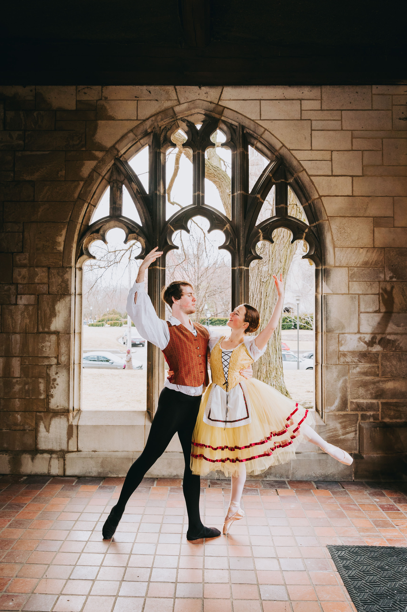

About Me

I am a PhD student at the University of Pittsburgh studying galaxy evolution with the James Webb Space Telescope
under the supervision of Dr. Rachel Bezanson. Currently, I am using photometry from the JWST MINERVA survey
to construct detailed composite SEDs to accurately represent the diversity of the galaxy population.
I study the demographics of spectral types across cosmic time and analyze their relationship to other
galactic global properties or morphology. In addition, I have experience using weak gravitational lensing to examine low surface brightness galaxies
and to perform cosmological measurements for the DELVE survey. Outside of science, I love aerial silks and trapeze, ballet,
baking, scuba diving, running, and hiking.
Education:
2024-Present: PhD in Physics and Astronomy from the University of Pittsburgh
2019-2023: BS in Astronomy and Astrophysics and BA in English Literature from the University of Chicago
Publications:
ADS link
Research
Galaxy Demographics at Cosmic Noon with JWST MINERVA
In Progress
To successfully trace galaxy evolution, we must identify different populations of galaxies and study their behavior and number counts over time.
The simplest possible categorization defines galaxies as either “star forming” or “quenched.” These two groups grow and evolve differently- star forming
galaxies are almost exclusively disks and quiescent galaxies are ellipticals. While useful, this classification ignores the diversity of the galaxy population
and the detailed information embedded in the galaxy SED. With many-band photometric surveys, we can take advantage of this additional information by stacking similar sources
to enahnce S/N and highlight features undetectable in noisy, individual SEDs or broad rest-frame colors. These features hold information about the physical conditions of these galaxies,
such as their recent star formation history, dust attenuation, stellar ages, and more. The trick here, of course, is figuring out how to group similar things.
We utilize imaging from the JWST MINERVA survey at 1.5<z<3 to build composite SEDs using two complementary methods: a data-driven process that defines clusters based on a similarity score, and a more novel approach that
relies on PCA decomposition and machine learning to group clusters. With these composites in hand, we can quantify the number density of galaxies as a function of spectral types and redshift, and flesh out the
relationships between spectral type and other global properties.
Weak Gravitational Lensing around Low Surface Brightness Galaxies in the DES Y3 Data
Chicoine, et al. (2024)
We present galaxy-galaxy lensing measurements using a sample of low surface brightness galaxies (LSBGs) drawn from the Dark Energy Survey Year 3 (Y3) data as lenses. LSBGs are diffuse galaxies with a surface brightness dimmer than the ambient night sky. These dark-matter-dominated objects are intriguing due to potentially unusual formation channels that lead to their diffuse stellar component. Given the faintness of LSBGs, using standard observational techniques to characterize their total masses proves challenging. Weak gravitational lensing, which is less sensitive to the stellar component of galaxies, could be a promising avenue to estimate the masses of LSBGs.
Our LSBG sample consists of 23,790 galaxies separated into red and blue color types at g-1> 0.6 and g-i<0.6, respectively. Combined with the DES Y3 shear catalog, we measure the tangential shear around these LSBGs and find signal-to-noise ratios of 6.67 for the red sample, 2.17 for the blue sample, and 5.30 for the full sample. We use the clustering redshifts method to obtain redshift distributions for the red and blue LSBG samples. Assuming all red LSBGs are satellites, we fit a simple model to the measurements and estimate the host halo mass of these LSBGs.
We place a 95% upper bound on the subhalo mass. By contrast, we assume the blue LSBGs are centrals, and place a 95% upper bound on the halo mass. We find that the stellar-to-halo mass ratio of the LSBG samples is consistent with that of the general galaxy population. This work illustrates the viability of using weak gravitational lensing to constrain the halo masses of LSBGs.
The DECADE cosmic shear project III: validation of analysis pipeline using spatially inhomogeneous data
Anbajagane, et al. (2025)
We present the pipeline for the cosmic shear analysis of the Dark Energy Camera All Data Everywhere (DECADE) weak lensing dataset: a catalog consisting of 107 million galaxies observed by the Dark Energy Camera (DECam) in the northern Galactic cap. The catalog derives from a large number of disparate observing programs and is therefore more inhomogeneous across the sky compared to existing lensing surveys. First, we use simulated data-vectors to show the sensitivity of our constraints to different analysis choices in our inference pipeline, including sensitivity to residual systematics.
Next we use simulations to validate our covariance modeling for inhomogeneous datasets. Finally, we show that our choices in the end-to-end cosmic shear pipeline are robust against inhomogeneities in the survey, by extracting relative shifts in the cosmology constraints across different subsets of the footprint/catalog and showing they are all consistent within 1σ to 2σ.
This is done for forty-six subsets of the data and is carried out in a fully consistent manner: for each subset of the data, we re-derive the photometric redshift estimates, shear calibrations, survey transfer functions, the data vector, measurement covariance, and finally, the cosmological constraints. Our results show that existing analysis methods for weak lensing cosmology can be fairly resilient towards inhomogeneous datasets. This also motivates exploring a wider range of image data for pursuing such cosmological constraints.
Contact
Email:
nmc130@pitt.edu
Address: 3943 O'Hara St, Office 210, Pittsburgh, PA, 15213
GitHub